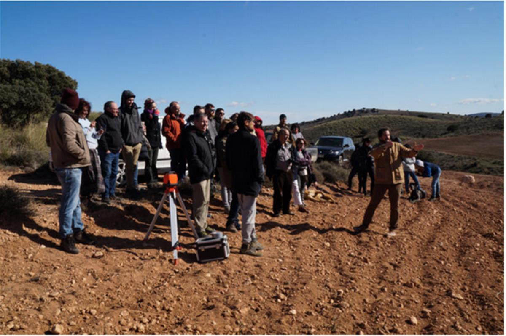
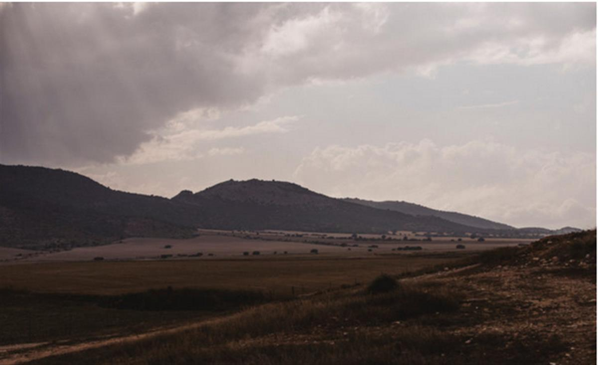
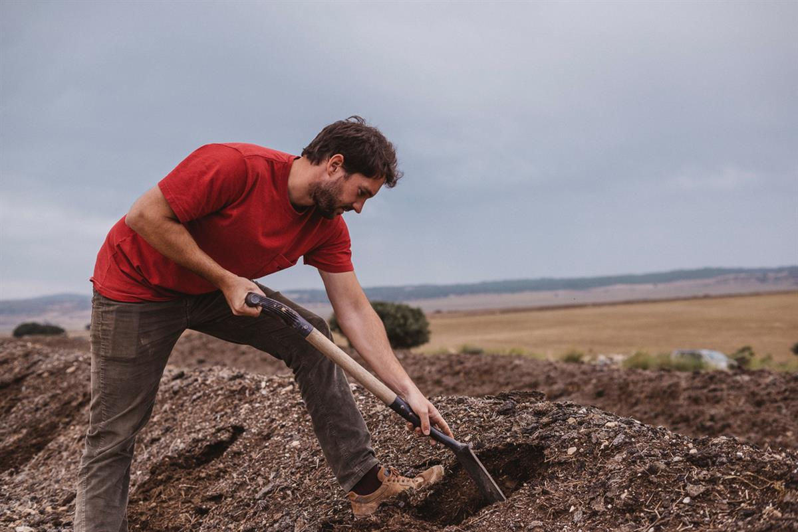

España (Murcia)
Educate to regenerate
Regeneration Academy
Imagine for a moment finding yourself in an abandoned town under the characteristic scorching sun of south-eastern Spain. You look up and are greeted by an arid environment, rocky soil, sparse vegetation and the very slight movement of reptiles and insects that have adapted to local weather conditions. You might not find this very appealing, but that didn’t stop Sanne Cruijt and Yanniek Schoonhoven from Holland from creating a regenerative agriculture research and education project, the Regeneration Academy.
After their experience teaching and working with farmers, agricultural companies, governments and NGOs, they detected a lack of practicality in student training and an opportunity to share the principles and techniques of regenerative agriculture for the good of the future.
Now you might be wondering, what exactly is regenerative agriculture? It comes from the Latin regenerare, which means giving new life to something that has degenerated: it’s a total change in how we see nature, from conceiving the world as a machine and an unlimited pool of resources to a systemic vision of life as an organic, living and spiritual whole. A reformulation of the system, of management, of the way of doing things: a move towards forming an alliance with nature rather than treating it as an enemy.
Under this philosophy, the academy at La Junquera farmhouse in Murcia establishes links between university students, young entrepreneurs and farmers to carry out their research in different subjects, from biodiversity to water resources management, soil management, gastronomy or social issues, such as depopulation.

It’s a great opportunity to put all the theory, and screen-time, to one side and reconnect with the environment and nature, to go back to working with our hands and lead a rural life with international scope. Continuing the concept, the project regenerates life in the farmhouse, rebuilding it and filling it once again with young people from all across Europe. Currently there are seven year-round residents, increasing to 23 during the months of the course.
This entrepreneurial group, committed to and conscious of the world of agriculture, sees the real impact of its own research on the farm itself, in projects such as the Magosero regenerative almond cream project or La del terreno natural wine.
And the vision seems to be slowly but surely spreading further afield, as more and more people from the area and local farmers are changing their outlook and supporting the project.
In the short term, the change-makers are expanding their areas of action through education. They are helping rural entrepreneurs with regenerative or sustainable creation processes and, through an EU project (Climate-KIC), they’re spreading information and raising awareness of the importance of agriculture in climate change in schools in the southwest of Spain.

But the community’s dreams don’t end there: in the long term, they want to create a national and international hub around regenerative agriculture where different projects and initiatives converge around this idea, proof that it’s possible to be an entrepreneur and make a living in a young rural environment.
AtlasAction: Check out the content of the program or discover how to participate through its website.
Written by Caitlin O’Rorke
Submitted by Jacobo Monereo Bernabéu de Yeste (29 July 2020)
SOURCE: ATLAS OF THE FUTURE
